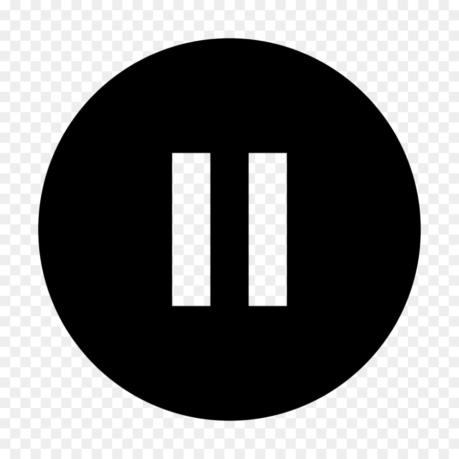

JavaScript Video Controls
Play Video
Pause Video
Slow Down
Speed Up
Your browser does not support HTML5 video.
[Dramatic music throughout but no speaking]
Mute
Volume
: 0
100%
Volume is:
Old School
Original
Random
Video courtesy of
Big Buck Bunny
.